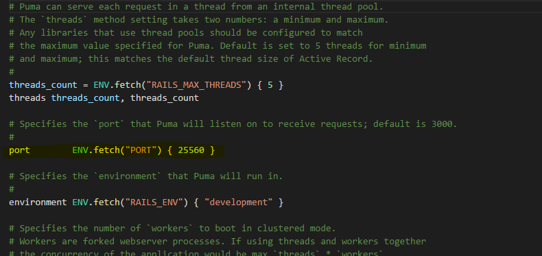

We've had a lot of issues trying to install ruby and rails on a windows system manually and as such have found the Rails Installer to be particularly useful. It's a simple to run installer that once run will install both Ruby, its dependencies and rails on the system.
We've used the Rails Installer for Ruby 2.2.6 and Rails 5.0 on our windows server.
Below we've included a set of generic instructions for checking your installations of ruby and rails
You'll need to install ruby version 2.2.6. The server may run on later version but we haven't tested this. You can find a guide on how to install ruby here
You can check if ruby has installed correctly by executing the command: ruby -v.
If ruby is installed correctly then the output should be the current version of ruby you have installed
Note: Make sure that Gem has also been installed correctly by executing the command: gem -v
The Web Server runs in the Ruby on Rails framework version 5.0.0.1. The server may run on later versions but we haven't tested this. You can find a guide on how to install rails here
You can check if rails has installed correctly by executing the command: rails --version. If rails is installed correctly then the output should be the current version of rails you installed
The database used by VRMeeting is MariaDB. You'll need to install MariaDB version 10.2 or later. You can find a guide on how to install the latest version of MariaDB here
If you haven't already then you'll need to pull down the latest distribution version of VRMeeting from The Distribution Repository, this contains the files for the Web Server in the folder /VRMeeting-Web-Server
You'll need to navigate into the new VRMeeting_Server directory and execute the following commands:
gem install bundlegem install mysql2bundle installYou'll need to find the file database.yml located in the directory /config and open it in any text editor. It should look like this:

You need to change the username and password to be that the user for your MariaDB installation so that rails can use it as its database
You'll also need to update the host property if your database is not hosted on the same machine as the web server.
Note: If the database is located on a separate host then you may need to configure your firewall so the web server can communicate with it
Still inside of the VRMeeting_Server directory, execute the following command: rails db:setup
This will connect to the database and automatically, using the settings in the database.yml config file, setup the required tables
The VRMeeting Web Server makes use of a 3rd Party Tool Image Magick which you will require in order for VRMeeting to function.
Follow the installation instructions found here before continuing
The File Server is included in the folder containing the web server
In order to run it, navigate to the main VRMeeting_Server directory and execute the command: fileserver
Our Rails server is configured by default to listen for HTTP requests on port 25560. You can change this by navigating to /config and opening the puma.rb file which should look similar to below:
To change the port the Rails server listens on just modify the port number inside of the {} in the line: port ENV.fetch("PORT") { 25560 }
Remember to configure any firewalls necessary to allow TCP connections on the port the Rails server is configured to listen on
Note: You'll also need to allow connections to the MariaDB database if they are blocked
The File Server defaults to run on port 8080 using TCP and currently is not configurable
When users attempt to join a meeting, they will retrieve the meeting information from the server. This includes the location the Host Server is running on and the location of the file server to download files from
You'll need to navigate to the directory /VRMeeting-Server/app/controllers and open the file meetings_controller.rb and find the following lines:
The parameter names refer to the following:
You need to modify the parameters accordingly. If you haven't installed the Host Server yet then you can delay this step until afterwards
The IP Address or Domain Name for the File Server will be the same as the machine that is hosting the Web Server as the File Server and Web Server are installed to the same machine
First in the main directory execute the command rails secret. This will give you a very long string. You'll want to execute this command twice and keep the outputs somewhere safe
Now navigate to the /config folder and open secrets.yml
You'll find 2 lines:
You'll want to take the 2 strings you generated earlier and place one infront of secret_key_base: for development and one infront of secret_key_base for test
The installation should now be complete. Return to the root VRMeeting_Server folder and run the command: rails server to start the server